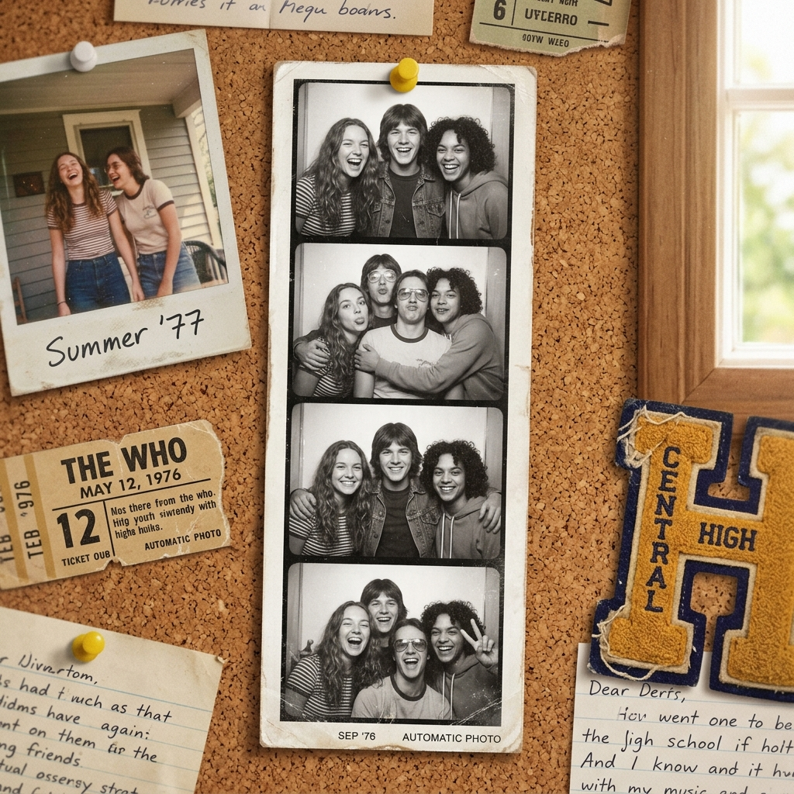

Dòng Thời Gian
Những cột mốc không thể nào quên của chúng ta.
Ngày Tựu Trường
05/09/2021
Ngày đầu tiên bước chân vào lớp 10, những gương mặt bỡ ngỡ và lạ lẫm nhưng tràn đầy năng lượng.

Hội Trại 26/3
25/03/2022
Cả lớp thức trắng đêm dựng trại, hát hò quanh lửa trại và chơi trò chơi tới sáng.
Chụp Ảnh Kỷ Yếu
15/04/2024
Cùng nhau mặc áo cử nhân, áo dài, lưu lại những bức hình rực rỡ nhất tại sân trường.